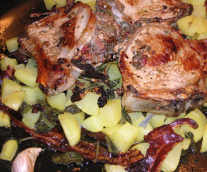

Schweinekoteletts mit Salbei
5 von 6500 gr mehlig kochende Kartoffeln schälen, würfeln und in Salzwasser ca 4 min vorgaren. Seitliche Taschen in 3 Koteletts schneide. Eine Handvoll Salbeiblätter, 1 Knoblauchzehe, etwas Rohschinken, 50 gr Butter und 3 Feigen mit Salz und Pfeffer im Mixer zu einer Paste verarbeiten. Die vorgeschnittenen Fleischtaschen mit der Paste füllen, mit etwas Olivenöl beträufeln und beiseite stellen. Ein Backbläch mit dicken Räucherspeckstreifen auslegen. Die Kartoffeln, etwas Olivenöl und ganze, ungeschälte Knoblauch Zehen darauf verteilen und im Ofen bei 220 C ca 10 min backen. Dann die Kotelletes gute 8 min beidseitig heiss anbraten und danach für weitere 10 min. zu den Kartoffeln in den Ofen geben.
